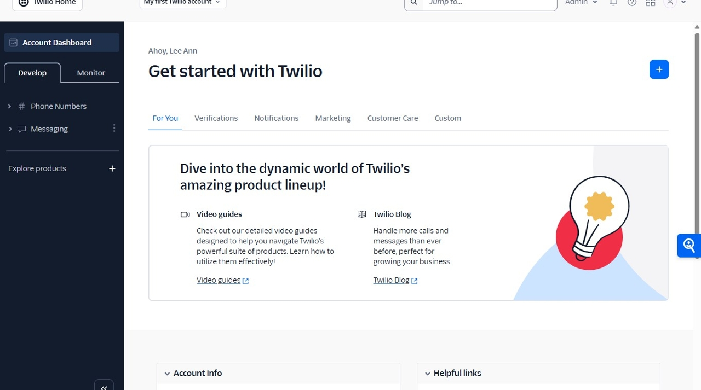
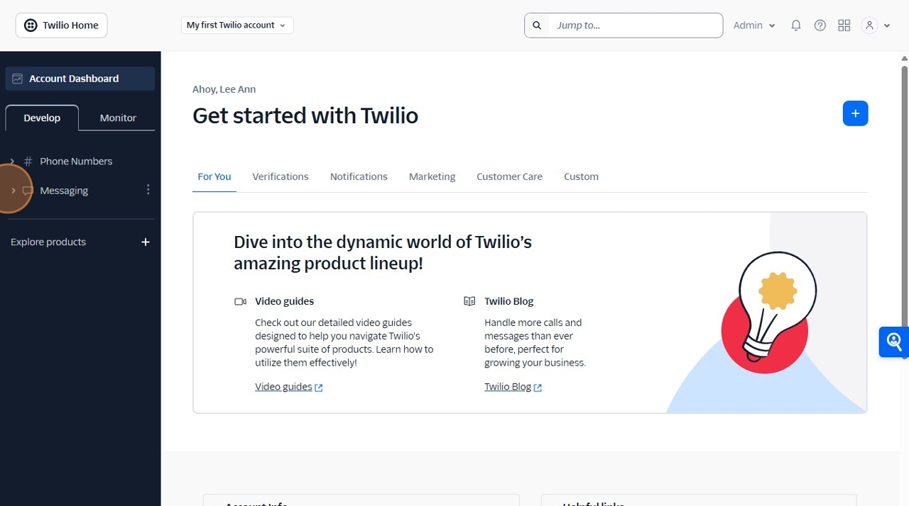
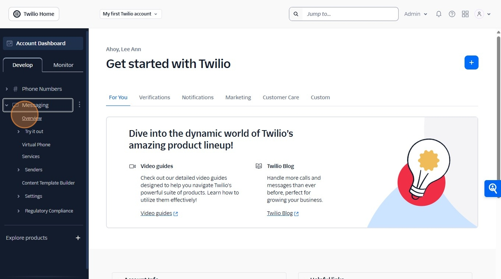
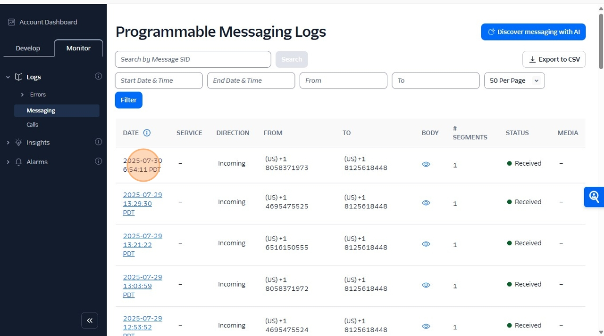
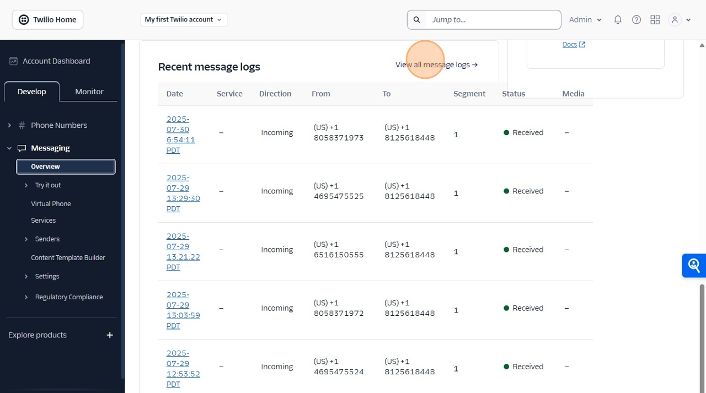

View Message Logs in Twilio Console
📋 6 Steps
📄 Converted from PDF
1
Navigate to https://console.twilio.com/?frameUrl=%2Fconsole%3Fx-target-region%3Dus1
Page 1
2 images
Confidence:
90%
⚠️ Notes:
• Description corrected for Twilio step 1

2
Click this icon.
Page 2
2 images
Confidence:
90%
 
3
Click "View all message logs"
Page 3
1 images
Confidence:
90%

4
Click "View all message logs"
Page 3
1 images
Confidence:
90%

5
Click "2025-07-306:54:11 PDT"
Page 3
0 images
Confidence:
90%
6
View message details
Page 4
0 images
Confidence:
60%
⚠️ Notes:
• Step added based on page 4 detection
📊 View Validation Report
📚 All Procedures
×